Неудаление Кейна и красная Робертсону
«Тоттенхэм» и «Ливерпуль» искрили не только голами
«Дуйсбург» и «Оснабрюк» не доиграли матч в третьей Бундеслиге. Рефери Николас Винтер сначала прервал игру на 35-й минуте, а через полчаса — вообще прекратил.
«В пользу «Оснабрюка» разыгрывался угловой, а затем последовали обезьяньи выкрики с трибун, — объяснил судья в интервью MagentaSport. — Он (вингер гостей Аарон Опоку) сразу это заметил, как и мой помощник. Оба они рассказали мне об инциденте. Это тот момент, где мы очень чувствительны и реагируем прямо. Я попытался поговорить с игроком — и увидел, что он шокирован».
Впервые в истории матч одной из трех ведущих профессиональных лиг Германии прервали из-за расистского инцидента. «Мы не можем принять такое. Аарон больше не мог играть», — заявил управляющий директор «Оснабрюка» Михаэль Веллинг, дав пример ссылки.
Он также добавил, что позднее расовому оскорблению подвергся и защитник «Дуйсбурга» Лерой Квадво. Видимо, за то, что пытался поддержать Опоку.
- 22-летний Опоку имеет ганские корни, но родился в Гамбурге и принадлежит одноименному клубу (в «Оснабрюке» в аренде). У 25-летнего Квадво похожая история: его отец эмигрировал из Ганы в 1980-х — сначала учился, а затем играл в низших лигах. Лерой тоже родился уже в Германии.
- ·В «Дуйсбурге» спокойно приняли отмену матча. Пресс-секретарь Мартин Хальтерманн сразу же извинился и назвал решение соперника абсолютно понятным, а президент клуба Инго Вальд осудил поступок болельщика и выразил сожаление о случившемся. Хальтерманн также сообщил, что кричавшего оскорбления идентифицировали — 55-летнего подозреваемого допросила полиция. Контрольный комитет Немецкой футбольной ассоциации (DFB) также расследует инцидент.
Фаны обеих команд быстро показали свое отношение. Они еще на стадионе скандировали «Нацисты — вон» и пели Schrei nach Liebe («Крик о любви»), известную песню против неонацистов от панк-группы Die Ärzte. Позже «Герта», «Гладбах», «Нюрнберг» и многие другие клубы пришли в соцсети «Оснабрюка», чтобы поддержать Опоку. Фраза «Нацисты — вон» здесь тоже упоминалась.
Я услышал крики, поднял голову и увидел человека, который их издавал. Такого не должно быть ни на стадионе, ни где-либо ещё
Президент призывает навести порядок
Французский футбол в этом сезоне = насилие. Беспорядки происходят так часто, что становятся уже привычным делом. На этот раз заискрило в перерыве игры 1/32 финала Кубка: фанаты «Лиона» в гостях атаковали болельщиков «Парижа» (из Лиги 2, не путать с ПСЖ) — в ход пошла пиротехника и кулаки.
«У меня нет слов… мы видели, как в перерыве матча болельщики «Лиона» наносили удары руками. Это напомнило мне ужасные кадры, которые я видел во время футбольного хулиганства в Англии в 1990-е годы», — заявил болельщик «Парижа» Уго в эфире RMC.
Но хаос не остановился на трибунах — когда команды хотели продолжить матч, фанаты прорвались на поле.
Матч отложили на 45 минут, а затем диктор объявил, что игра отменена и попросил болельщиков покинуть стадион. На момент остановки на табло горели 1:1 — и пока не ясно, что будет дальше.
Клубы обвиняют друг друга
Президент «Парижа» Пьер Ферраччи в ярости: «Это должен был быть большой праздник, но там была группа скотов. Жан-Мишелю Оласу придется успокаивать своих фанатиков. Когда «Лион» и «Марсель» оскорбляют друг друга, другие клубы не должны страдать и получать наказания. Каждый должен брать на себя ответственность. Санкции должны быть показательными.
Мы знаем, что инциденты начались с их стороны. Я не допущу, чтобы матч повторился. Инциденты всегда случаются с одними и теми же клубами. Они не болельщики. Я сказал Оласу: «Тебе нужно навести порядок в доме. Вы тянете за собой весь французский футбол».
Но он ответил мне, что группировка под названием «Панда» из «ПСЖ» приехала атаковать болельщиков «Лиона». Это то, что он говорил человеку, ответственному за безопасность, придумывая разные истории. Насилие произошло прямо у меня на глазах. Это люди, которых без полиции невозможно контролировать».
Но он ответил мне, что группировка под названием «Панда» из «ПСЖ» приехала атаковать болельщиков «Лиона». Это то, что он говорил человеку, ответственному за безопасность, придумывая разные истории. Насилие произошло прямо у меня на глазах. Это люди, которых без полиции невозможно контролировать».
Французские стадионы захлестнули беспорядки
В этом сезоне Франция никак не может взять под контроль вернувшихся на трибуны болельщиков. Об ужесточении наказаний говорят и в правительстве, но инциденты повторяются постоянно.
В матче третьего тура Лиги 1 между «Ниццей» и «Марселем» главным героем стал Димитри Пайет. Тогда игру прервали во втором тайме, хотя фанаты «Ниццы» еще до перерыва забросали соперника мусором. На 75-й минуте Пайет бросил бутылку обратно на трибуну, в ответ фанаты выбежали на поле. Несколько игроков «Марселя» бросились навстречу толпе, вставая на защиту Пайета.
Ассистент Сампаоли — Хорхе Десио — даже ударил фаната «Ниццы» по лицу. Обе команды ушли в раздевалки, а президент «Ниццы» Жан-Пьер Ривер уговорил болельщиков покинуть поле. «Марсель» в том случае тоже отказался продолжать, матч переиграли 27 октября в Труа.
22 сентября после матча 7-го тура чемпионата «Анжер» — «Марсель» (0:0) массово схлестнулись болельщики, фанаты марсельцев после финального свистка прорвались на поле.
30 сентября матч Лиги Европы между «Марселем» и «Галатасараем» (0:0) прервали из-за беспорядков на трибунах. По ходу первого тайма болельщики обеих команд перекидывались файерами, из-за чего игру остановили на 8 минут. Из-за этих инцидентов МВД Франции запретило фанатам «Марселя» ехать на гостевой матч против «Лилля».
Не используй открытые полки
Открытые горизонтальные поверхности — те ещё пылесборники. Дизайнеры интерьеров так их и называют. На фото стеллажи с милыми мелочами, может, и смотрятся классно, но в реальности бытовые предметы и сувениры из поездок там скапливаются сами собой, вы этого не замечаете. И чтобы банально протереть под ними пыль, нужно потратить огромное количество времени. Если отказаться от открытых полок, столиков и тумбочек, проводить уборку станет в разы проще. Пусть их место займут шкафы с дверцами, которые пыль не сможет взять даже штурмом.
Расставляй всё по местам
Следующее решение по-армейски жёсткое. У каждой вещи должно быть своё место, куда она возвращается после использования. Стоит один раз сказать «пусть это полежит пока здесь», и можно готовиться к генеральной уборке. Сняли одежду — повесили в шкаф. Посуду после мытья поставили на сушилку. Детские игрушки вечером сложили в ящик. И так во всём. Если места для хранения заканчиваются, это повод задуматься на тему ответственного потребления: все ли приобретённые вещи нам действительно нужны?

Творожная запеканка
 180 г творога;
1 яйцо;
Половина чайной ложки разрыхлителя;
1 ст.л. манки;
1 ст.л. сахара;
⅓ ч.л. растительного масла;
Запеканку я готова есть и на завтра, и на обед, и на ужин. В СВЧ-печи она готовится очень быстро, поэтому можно не отказывать себе в удовольствии. Главное — купить качественный творог.
1. Смешайте творог, яйцо и сахар в миске.
2. После этого добавьте манку и разрыхлитель, который сделает запеканку пышнее. Хорошенько размешайте массу венчиком или миксером до однородности.
3. Выберите форму, подходящую для микроволновки, и смажьте её подсолнечным маслом. Надо учитывать, что запеканка сильно поднимется, так что берите форму с запасом в пару сантиметров по высоте.
4. Поставьте в микроволновку на 10 минут при мощности 800 Вт. При большей мощности время нужно уменьшить.
Все для уборки
Лайфхак прост: соберите необходимый минимум чистящих средств и губок в ведро, ящик с ручкой или даже тканевую корзину. Такой контейнер удобно носить с собой по дому и не возвращаться каждый раз за забытой мелочью. А ограниченный объём заставит вас использовать лишь самые необходимые и эффективные чистящие средства. И кстати, хранить аккуратный ящик тоже проще, чем разномастные баночки, бутылочки и тряпочки. Они так и норовят расползтись по всей ванной комнате.